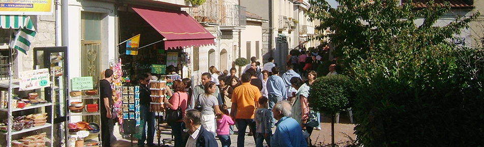
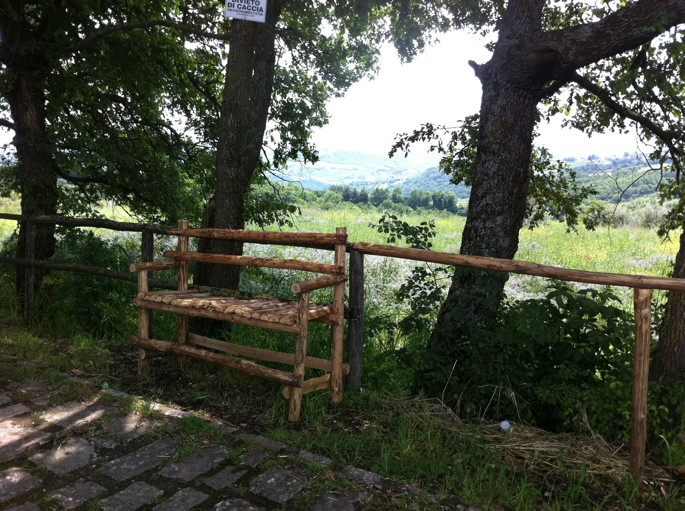
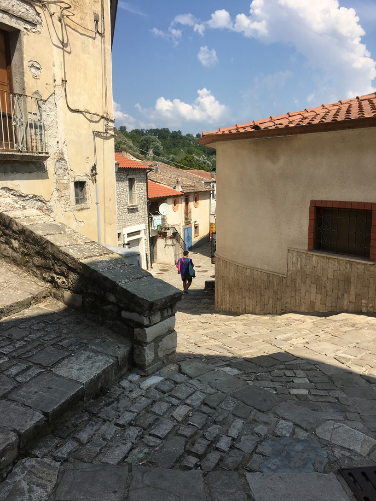
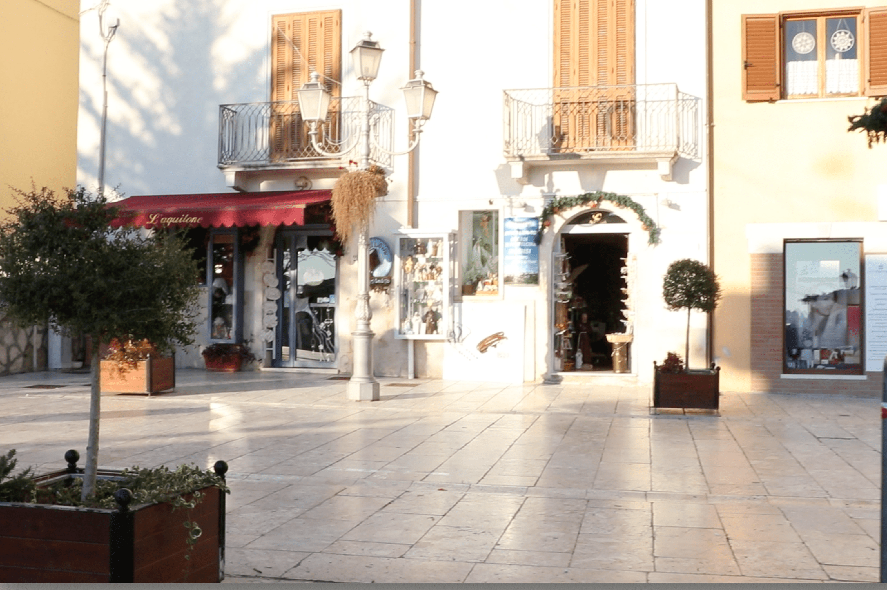
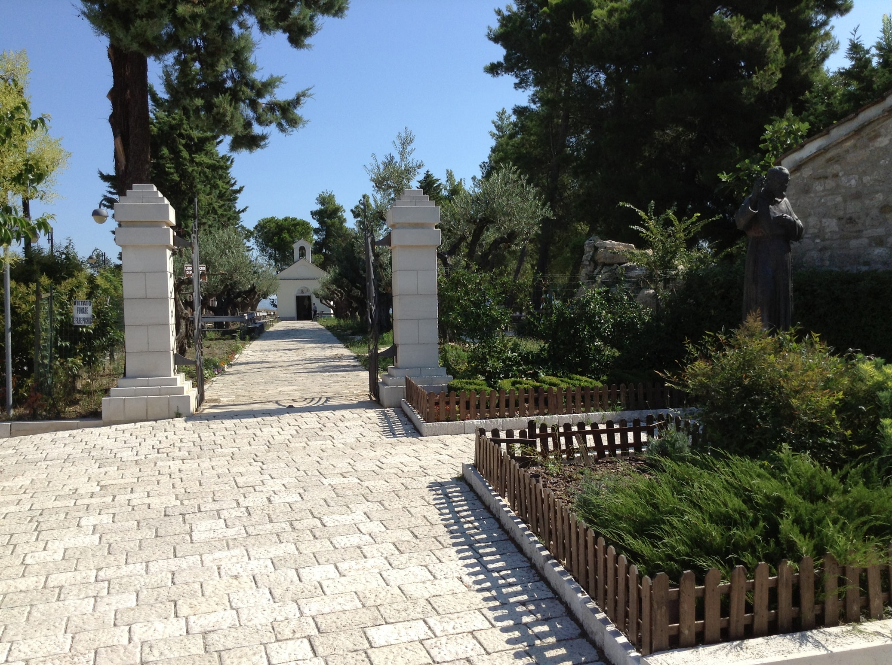
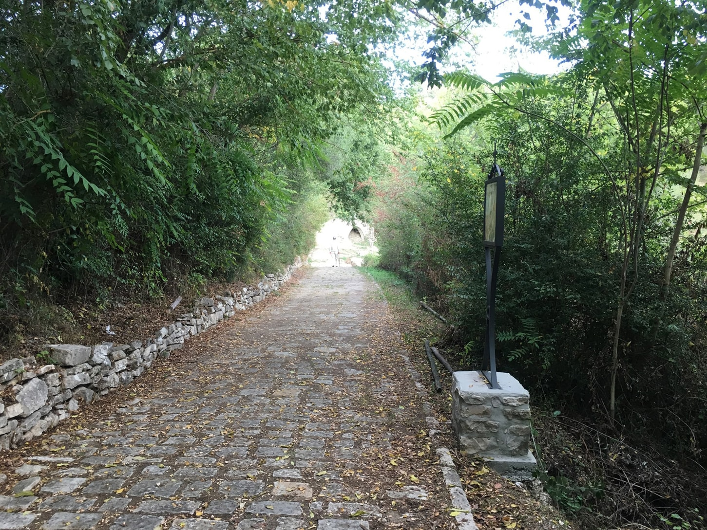
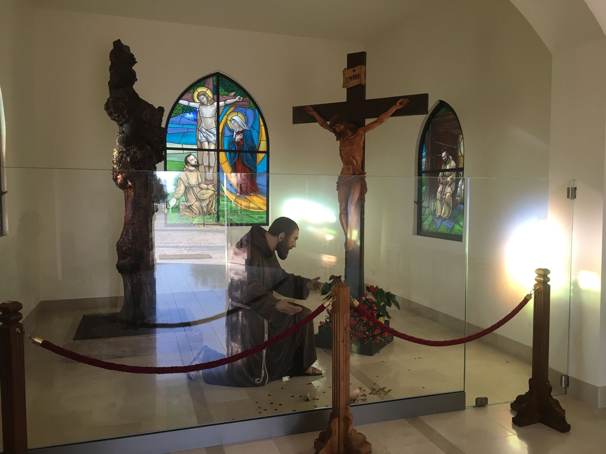
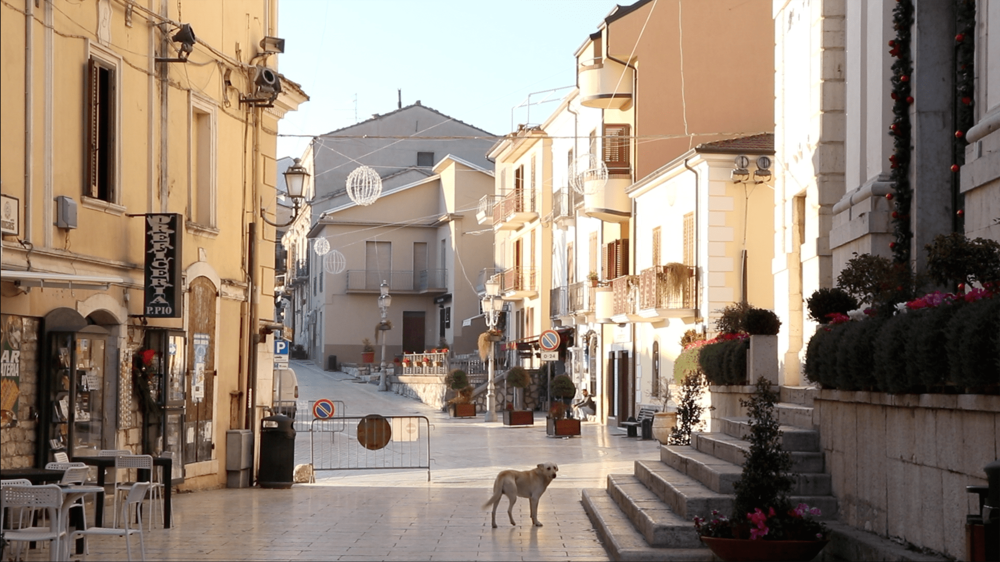
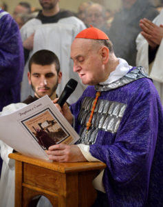

If you have heard of Pietrelcina you probably already know how famous it is. It is the town that gave its name to St. Padre Pio of Pietrelcina, and is visited by many pilgrims.
What you may not know is that it is full of the most amazing peace and tranquility and is still a typical Italian rural community. Here you can experience the real Italy.
On the other hand, if you have not heard of it, perhaps it is time to come and experience something unique, simple, down-to-earth, and an antidote to this busy world.
Here are some Facts about Pietrelcina
It is where St. Padre Pio was born, where he grew up and where he first received the Stigmata.
- It is where he said his first Mass and remained as a priest for the next six years
- It is in the countryside of CAMPANIA, 15 minutes by car from the city of Benevento, approximately 80 Km east of Naples and about 250 km south of Rome
- It is approximately 250 km west of San Giovanni Rotondo.
- It is NOT where he died and where his body is laid to rest.
Why is Pietrelcina so Special?
Long after he left and was living in San Giovanni, St. Padre Pio was reported to have said, “Pietrelcina will be preserved like the apple of my eyes.” Before dying, he declared, “During my life I have favoured San Giovanni Rotondo. After my death, I will favour Pietrelcina.”
If you want to know more about the town, its history and what goes on here today, you can read some articles in our Visit Pietrelcina Magazine








In February 2017 Cardinal Angelo Comestri visited Pietrelcina and celebrated mass in the church of the Holy Family which is the friary church of the Capuchins. You can see the whole article here at the official website of the Capucines in Pietrelcina.During his visit he was made an Honorary Citizen of Pietrelcina. So now, like Padre Pio, he can call himself a Pietrelcinese
During the mass, he gave a very special sermon about Pietrelcina and its significance. This is of great importance an a treasure to hear from the lips of such a senior prelate of the church. We have reproduced it here in full and also included the original Italian version.
The Cardinal's Sermon
By Cardinal Angelo Comastri, Pietrelcina, 12 February 2017 — freely translated from the Italian original
In 1960 Padre Pio asked Lucia Iadanza, one of his spiritual daughters from Pietrelcina, if the external staircase of his house was still standing. When Lucia marvelled that he still remembered the old staircase, Padre Pio replied: “I belong to Pietrelcina, I remember it stone by stone”. And, as if making a commitment, he added: “Our town must be very dear to us. Do everything to be an example for everyone.” We can say that this is his will for Pietrelcina.
Another time he wrote to the teacher, Grazia Pannullo: “Our town, which is very dear to our heart, will receive the most blessed blessings from heaven.” We can see the fulfilment of these words and our hearts are deeply moved.
But let us ask ourselves: why did Padre Pio love Pietrelcina?
Padre Pio gives us the answer in person since one day he confided: “In Pietrelcina there was Jesus and everything started there” .
These words clearly state that it was here, in Pietrelcina, that Padre Pio’s path to holiness and his ardent dialogue with Jesus began. Although this dialogue remains hidden in Padre Pio’s soul, it has been revealed to us in part. This is enough to make our own, the words that Jacob said after the famous vision of the ladder that rested on the earth and ascended to Heaven. The patriarch exclaimed: “The Lord is in this place and I did not know it. This is the house of God, this is the gate of Heaven “ (Genesis 28,16-17).
Dear Pietrelcina, these beautiful words belong to you! You can truly and rightly say: “This is the house of God, this is the door of Heaven!”.
What happened at Pietrelcina?
Here since the age of five, Padre Pio began to have constant visions of Jesus, of Our Lady and of the Angels: and, by the design of God’s mercy to benefit all of us, Heaven will always be open to Padre Pio. A truly extraordinary fact.
In Pietrelcina Padre Pio also had a terrible vision which he related in a letter sent to his Spiritual Director on 7 April 1913. According to Padre Pio’s painful account, Jesus showed him some priests and prelates who celebrated Mass unworthily. Then from the eyes of Jesus he saw two tears fall and from Jesus’ own mouth he heard this impressive exclamation: “Butchers!”. Think of that horrible fact!
Perhaps, precisely for this reason, Padre Pio has increasingly identified himself with the mystery of the Holy Mass and, in the intense way he celebrated it, he revealed the Calvary that makes itself present on the Altar. Thus he involved everyone in the desire to respond more lovingly to the boundless love of Jesus. This lesson of Padre Pio continues; today it is more relevant than ever, because so many people no longer understand the value of Holy Mass and the importance of Holy Communion .
Padre Pio himself confided: “If people understood the value of a Mass, there would be a crowd at the door of the Churches to be able to enter!”. Unfortunately, this is not the case and we pay the price for the confusion and disorientation and moral dislocation of the current society.
Here in Pietrelcina he wrote, using imagery, to share the memory of his priestly ordination. Padre Pio offered himself to Jesus as Simon of Cyrene to carry with him the Cross, which saves us and defends us from the assaults of satan. It was here that he made the decision to fight in order to pull out souls from mortal sin, because “Mortal sin is like giving Satan a signed blank cheque.”
During the recent arrangement of the revered body of Padre Pio, it was noticed that on the right shoulder there was a depression and a concentration of blood as if it had carried a huge weight for a long time causing a laceration in the flesh. Padre Pio one day said to Fra ‘Modestino: “This is the wound that makes me suffer most”.
It is another detail that reveals the intense participation of Padre Pio in the Passion of Jesus: the Passion that saves the world and prevents it from falling into a precipice.
But there is another reason that explains the intense love of Padre Pio for Pietrelcina.
Here he had his first encounter with Jesus in the simple but profound faith of his parents and the people of his country.
When he left to enter the convent, his mother said to him: “My heart is torn apart, but go! Saint Francis calls you …”. Padre Pio will never forget these words. And when he saw his mother in San Giovanni Rotondo after several years, he did not allow her to kiss his hands, first he wanted to be the one to kiss his mother’s hands.
What a beautiful example! And how much must moms reflect today!
He also regarded his father with veneration and admiration. Several times he said, “My father twice crossed the ocean to make me study!”.
We can add that the father always remained faithful to his wife and his family. We can also say … what a beautiful lesson for families today!
The people of Pietrelcina also filled the memories of Padre Pio. To those who went to see him, he often gave this recommendation: “Greet the Morgia for me”. Perhaps the good and simple people of that time will never return.”
Fra ‘Modestino, his fellow countryman, asked him if he had something to say to Pietrelcina. He answered with slow but convinced words: “I do not ask you anything but one thing: that they do not make our town disappear! “.
Because of God’s grace and certainly also because of the prayer of Padre Pio, here in Pietrelcina one still breathes a living faith. Keep it jealously guarded in the grateful remembrance of Padre Pio. Because, elsewhere, it is not so and the bitter fruits are there for all to see.
In many families we no longer pray, we do not feel the presence of God, we do not live the Gospel, we no longer breathe true Love: that comes from God and leads to God. So many families have become practically atheists and therefore they do not transmit values to their children, which give meaning and light to life. And, as a result, we have so many young people who self-destruct. Do not you notice?
To Padre Livio Barbati, on his way to Pietrelcina, Padre Pio said: “Bring many greetings to my town, and tell them to be good Christians!”.
This is the invitation that comes out of the mouth and heart of Padre Pio tonight: “Tell them to be good Christians”.
Listen to Padre Pio! Be worthy of his affection, be ready to bring into your families the living and ardent faith, which once was the glory of Italy and the joy of adults and children.
Pietrelcina! Padre Pio asks you! I am sure that in your hearts you are saying: it will be so!
Thank you, in the name of Padre Pio, your fellow citizen.
And here is the same homily, in the original Italian language
L'Omelia del Cardinale
Di Angelo Comastri, Cardinale — testo originale in italiano
di Angelo Comastri, Cardinale – Padre Pio amava Pietrelcina: questo è un fatto sicuro e documentato.
A Lucia Iadanza, una sua figlia spirituale di Pietrelcina, nel 1960 chiese se era ancora in piedi la scala esterna di casa sua. Alla meraviglia di Lucia per il fatto che Padre Pio ricordasse ancora la vecchia scala, Padre Pio rispose: “Io di Pietrelcina ricordo pietra per pietra”. E, come se prendesse un impegno, aggiunse: “Molto ci deve stare a cuore il nostro paese. Fate di tutto per essere di esempio a tutti.” Possiamo dire che questo è il suo testamento per Pietrelcina.
All’insegnante Grazia Pannullo scrisse: “Il nostro paese, che tanto ci deve stare a cuore, iceverrà dal cielo le più elette benedizioni.” I nostri occhi vedono il compimento di queste parole e i nostri cuori si commuovono profondamente.
Ma chiediamoci: perché Padre Pio amava Pietrelcina?
Ci risponde Padre Pio in persona che un giorno confidò: “A Pietrelcina c’è stato Gesù ed è iniziato tutto lì”.
Queste parole dicono chiaramente che a Pietrelcina è iniziato il cammino della santità di Padre Pio e il suo dialogo ardente con Gesù: questo dialogo resta in parte nel segreto dell’anima di padre Pio, ma in parte ci è stato svelato. Questo è sufficiente per fare nostre le parole che disse Giacobbe dopo la celebre visione della scala che poggiava sulla terra e saliva verso il Cielo. Il patriarca esclamò: “Il Signore è in questo luogo e io non lo sapevo. Questa è la casa di Dio, questa è la porta del Cielo.” (Gen 28,16-17).
Cara Pietrelcina, queste splendide parole ti appartengono! Potete veramente e giustamente dire: “Questa è la casa di Dio, questa è la porta del Cielo!”.
Che cosa è accaduto a Pietrelcina?
Qui dall’età di 5 anni, Padre Pio comincia ad avere costanti visioni di Gesù, della Madonna e degli Angeli: e, per disegno della Misericordia di Dio a vantaggio di noi tutti, il Cielo resterà sempre aperto su Padre Pio. Un fatto davvero straordinario.
A Pietrelcina Padre Pio ha anche avuto la terribile visione raccontata in una lettera inviata al suo Direttore Spirituale il 7 aprile 1913. Secondo il racconto sofferto di Padre Pio, Gesù gli mostrò alcuni sacerdoti e prelati che celebravano la Messa indegnamente. E dagli occhi di Gesù vide uscire due lacrime e dalla bocca di Gesù sentì uscire questa impressionante esclamazione: “Macellai!”. Pensate che fatto orribile!
Forse, proprio per questo, Padre Pio si è sempre di più immedesimato con il mistero della Santa Messa e, con il modo intenso di celebrare, lasciava trasparire il Calvario che si rende presente sull’Altare. E coinvolgeva tutti nel desiderio di rispondere con più amore all’Amore sconfinato di Gesù. E la lezione di Padre Pio continua: oggi è più attuale di ieri, perché tanta gente non capisce più il valore della Santa Messa e l’importanza della Santa Comunione.
È stato Padre Pio a confidare: “Se la gente capisse il valore di una Messa, ci sarebbe la ressa alla porta delle Chiese per poter entrare!”. Purtroppo non è così e ne paghiamo il prezzo della confusione e del disorientamento e dello sbandamento morale dell’attuale società.
Qui a Pietrelcina, come scrisse nell’immaginetta-ricordo dell’Ordinazione sacerdotale, Padre Pio si offrì a Gesù come Cireneo per portare con Lui la Croce, che ci salva e ci difende dagli assalti di satana. E sempre qui maturò la decisione di lottare per tirare fuori tante anime dal peccato mortale, perché “Il peccato mortale è come una cambiale in bianco firmata e consegnata a Satana”.
Nella recente sistemazione del venerato corpo di Padre Pio, sulla spalla destra è stato notato un avvallamento e una concentrazione di sangue come se avesse portato lungamente un peso enorme fino a provocare una lacerazione anche nella carne. Padre Pio un giorno disse a Fra’ Modestino: “Questa è la ferita che mi fa più soffrire”.
È un altro particolare che svela l’intensa partecipazione di Padre Pio alla Passione di Gesù: la Passione che salva il mondo e gli impedisce di cadere in un precipizio.
Ma c’è un’altra ragione che spiega l’intenso amore di Padre Pio per Pietrelcina.
Qui egli ha avuto il primo incontro con Gesù nella fede semplice ma profonda dei suoi genitori e della gente del suo paese.
Quando partì per entrare in convento, la mamma gli disse: “Mi si squarcia il còre, ma va’: San Francesco ti chiama …”. Padre Pio non dimenticherà più queste parole. E, quando rivide la mamma a San Giovanni Rotondo dopo diversi anni, non permise che la mamma gli baciasse per prima le mani: prima volle essere lui a baciare le mani della mamma.
Che bell’esempio! E quanto deve far riflettere le mamme di oggi!
E anche nei confronti del padre conservò venerazione e ammirazione. Dirà più volte: “Mio padre due volte varcò l’oceano per farmi studiare!”.
E noi possiamo aggiungere: e il padre rimase sempre fedele alla sua sposa e alla sua famiglia. Anche questa … che bella lezione per le famiglie di oggi!
E anche la gente di Pietrelcina riempiva i ricordi di Padre Pio. A quanti andavano a trovarlo, dava spesso questa raccomandazione: “Salutatemi la Morgia. Forse la gente buona e semplice di quel tempo non ritornerà mai più.”
A Fra’ Modestino, suo compaesano, che gli chiedeva se avesse qualcosa da dire a Pietrelcina, rispose con parole lente ma convinte: “Non ti chiedo niente. Una sola cosa: non facciano ‘scomparire’ il nostro paese!”.
Per Grazia di Dio e sicuramente anche per la preghiera di Padre Pio, qui a Pietrelcina ancora si respira una fede viva. Custoditela gelosamente nel ricordo grato di Padre Pio.
Ma, altrove, non è così e i frutti amari sono sotto gli occhi di tutti.
In tante famiglie non si prega più, non si sente la presenza di Dio, non si vive il Vangelo, non si respira più l’Amore vero: quello che viene da Dio e porta a Dio. Tante famiglie sono diventate praticamente atee e, pertanto, non trasmettono ai figli quei valori, che danno senso e luce alla vita. E, di conseguenza, abbiamo tanti giovani che si autodistruggono. Non ve ne accorgete?
A Padre Livio Barbati, in viaggio verso Pietrelcina, Padre Pio raccomandò: “Porta tanti saluti al mio paese, e di’ che facciano i buoni cristiani!”.
È l’invito che esce dalla bocca e dal cuore di Padre Pio anche questa sera: “Di’ che facciano i buoni cristiani”.
Ascoltate Padre Pio! Siate degni del suo affetto, siate pronti a riportare nelle vostre famiglie la fede viva e ardente, che un tempo era gloria dell’Italia e gioia dei grandi e dei piccoli.
Pietrelcina! Padre Pio te lo chiede! Sono certo che nei vostri cuori state dicendo: sarà così!
Grazie, a nome di Padre Pio vostro concittadino.